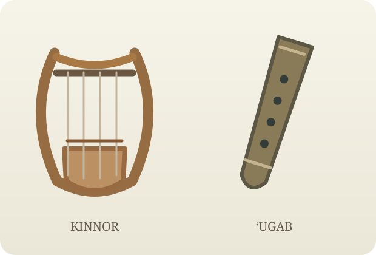

Apéndices / Instrumentos musicales
Instrumentos musicales
Ugabʿûḡāḇ

Instrumento musical mencionado en el Antiguo Testamento, generalmente interpretado como un instrumento de viento. La Reina-Valera 1960 lo traduce como «flauta», aunque su identificación exacta es discutida.
Hechos bíblicos
En Génesis 4:21, el ugab aparece junto al kinnor en la descripción de Jubal, considerado antepasado de quienes practican la música instrumental.
En Job 21:12 se menciona entre los instrumentos utilizados para acompañar celebraciones y momentos de alegría.
En Job 30:31, por el contrario, aparece relacionado con el llanto y el duelo.
En el Salmo 150:4 se incluye entre los instrumentos con los que se exhorta a alabar a Dios.
Características y usos
Tradicionalmente, el ugab se ha identificado como una flauta o instrumento de viento construido con una caña o tubo.
También se ha propuesto que pudiera tratarse de un conjunto de tubos de distintas longitudes, semejante a una flauta de Pan.
Sin embargo, el texto bíblico no describe su estructura, materiales, número de tubos ni técnica de interpretación. Por tanto, no es posible determinar con certeza su apariencia original.
Simbolismo
Alegría y celebración. En Job 21:12, el ugab acompaña las celebraciones de quienes disfrutan de la prosperidad.
Lamento y tristeza. Job 30:31 presenta el sonido del instrumento asociado al duelo, mostrando su capacidad para expresar sentimientos contrapuestos.
Alabanza a Dios. En el Salmo 150:4, el instrumento se incorpora a la exhortación general a alabar a Dios mediante la música.
Etimología
El término hebreo ʿûḡāḇ (עוּגָב) designa un instrumento musical cuya identificación exacta permanece discutida.
Tradicionalmente se ha relacionado con instrumentos de viento, particularmente flautas de uno o varios tubos. Su etimología no está establecida con certeza.
El término aparece únicamente en cuatro versículos del Antiguo Testamento.
La RVR60 también utiliza «flauta» para otros términos originales, como el hebreo ḥālîl (1 S 10:5), el arameo mašrôqîṯā (Dn 3:5) y el griego aulós (1 Co 14:7). No todas estas menciones se refieren al ugab.
Referencias
Gn 4:21; Job 21:12; 30:31; Sal 150:4.